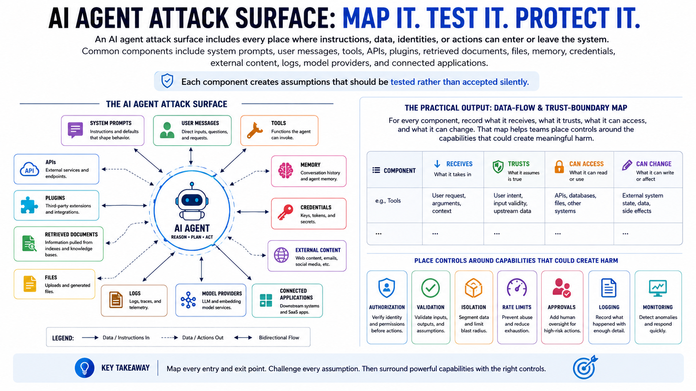

Securing AI Agents
Agent Attack Surface
Connecting to LMS... Progress: in progress
Version 1.0 | Date: 2026-06-21
This course provides educational information about securing AI agent systems. It is not legal advice, product-specific implementation guidance, or offensive security training.

Narration
An AI agent attack surface includes every place where instructions, data, identities, or actions can enter or leave the system. Common components include system prompts, user messages, tools, APIs, plugins, retrieved documents, files, memory, credentials, external content, logs, model providers, and connected applications. Each component creates assumptions that should be tested rather than accepted silently.
A useful threat model follows three paths. The instruction path asks who can influence what the agent believes it should do. The data path asks what information the agent can retrieve, retain, transform, or disclose. The action path asks which tools can change systems or communicate outside the application. A weakness becomes more serious when those paths connect, such as untrusted content influencing a tool that has broad access.
Identity is part of the attack surface too. Teams should determine whether an action runs as the user, a shared service account, or a powerful application identity. Secrets, tokens, delegated credentials, and tool-specific permissions need clear ownership and rotation. Third-party models, connectors, libraries, and hosted services also introduce dependencies that should be inventoried and reviewed.
The practical output of attack-surface analysis is a data-flow and trust-boundary map. For every component, record what it receives, what it trusts, what it can access, and what it can change. That map helps teams place authorization, validation, isolation, rate limits, approvals, logging, and monitoring around the capabilities that could create meaningful harm.